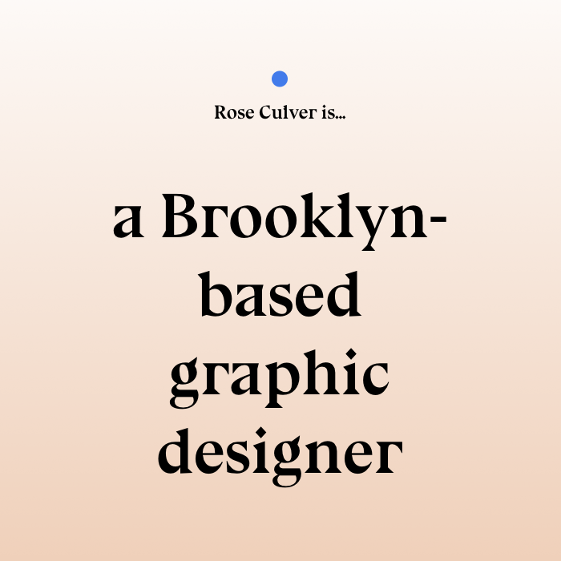

Exercises
Seven Principles
Intro to HTML and CSS, styling the 'Seven Principles of Typographic Contrast' by John Barry.
J. Müller-Brockmann
Recreate a Joseph Müller-Brockmann poster using just HTML and CSS. Then add transitions and animations that seem appropriate for your forms.

Math.Random Tutorial
Learn how to use Math.Random to select a random page for a mock-portfolio site from a SuperHi tutorial.